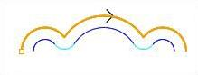
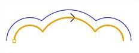

This determines the side of the curve to be cut.
Right / Left
This can be set for both open and closed curves. For example, for a clockwise arc/circle, the right side would be inside the arc/circle and the left side would be outside the arc/circle.
 Cut Start Side – Right |
 Cut Start Side – Left |
Use Outside or Inside for Closed Curves
For closed curves, you can set the Cut Start Side by selecting Use Outside or Inside for Closed Curves and select Outside or Inside.
Determine using the 3D model
If a 3D model is being used, check this box to automatically determine the Start Side. This option may not be available for all 2½ Axis operations.
Note: This feature is not available in Xpress configuration.
|